1521, Mar 16. |
A Spanish expedition, sailing across the Pacific Ocean from east towest, and led by the Portuguese Ferdinand Magellan (died Apr 27, 1521) lands on Homonhon Island east of Samar with three small ships, named the Concepcion,Trinidad and Victoria.  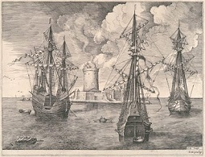
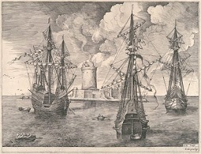
|
1521, Mar 28. |
Directing his ships southwestward, Magellan reaches Limasawa Island, south of Leyte. It is ruled by Rajah Kulambo, who becomes Magellan's friend. |
1521, Mar 29. |
Directing To seal the friendship between Magellan and Rajah Kulambo, they solemnize a blood compact. This is the first recorded blood compact in Philippine history. |
1521, Mar 31. |
The first mass on Philippine soil is celebrated on Limasawa or Masao in some reference book. |
1521, Apr 7. |
After sailing to Cebu Island, Magellan enters a new blood compact with the local chieftain, Rajah Humabon 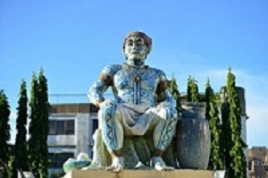 |
1521, Apr 27. |
Magellan dies in a battle with Lapu-Lapu, chieftain of Mactan, an island near Cebu. |
How the Spaniards Colonized the Philippines
1543, Feb 2 |
The leader of the most successful Spanish expedition after Magellan, Ruy Lopez de Villalobos (died Apr 4, 1546) arrives in the archipelago. Henames the islands the Philippines in honor of the son of King Charles I, Philip II (1556-1598) of Spain. Villalobos reaches Sarangani Island off the eastern coast of Mindanao and settles there for 8 months. But because of the scarcity of food, the expedition is forced to leave the place and sails to the Moluccas where Villalobos dies. |
1565, Feb 13 |
With four ships and 380 men, Miguel Lopez de Legaspi arrives in the Philippines. |
1565, May 8 |
The Island of Cebu is surenderred to Legaspi by its ruler King Tupas Legaspi establishes the first permanent Spanish settlement on Cebu and becomes the first Spanish Governor-General. By his orders, tributes are collected from all Filipino males age 19 to 60. |
1568. |
The Portuguese, under the command of General Gonzalo de Pereira, attack Cebu and blockade its port. |
1570. |
The Portuguese again attack the colony and are repulsed. The series of attacks stems from Portugal's claim to the territory based on the provision of the Treaty of Tordisillas entered into by Spain and Portugal on June 7, 1474, in which their respective spheres of influence, trade and conquest were defined. The Portuguese believe that the Philippines falls within their sphere |
1570, May. |
Legaspi sends an expedition under the leadership of Martin de Goiti to Manila. Manila is ruled by Rajah Suliman, whose friendship is won by de Goiti. |
1571, Jun 24. |
Legaspi establishes his government in Manila and proclaims it the capital of the Philippines, calling it the "distinguished and ever loyal city" |
1580. |
The Spanish King Philip II receives the throne of Portugal upon the death ofthe Portuguese King Sebastian. This puts an end to the Portuguese harassment of thePhilippine archipelago. |
1580. |
The Spaniards institute forced labor on all male natives aged 16 to 60. |
 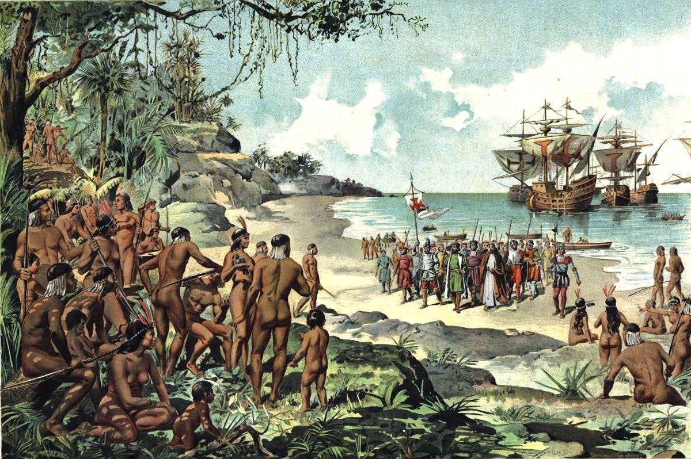
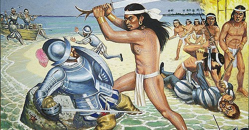
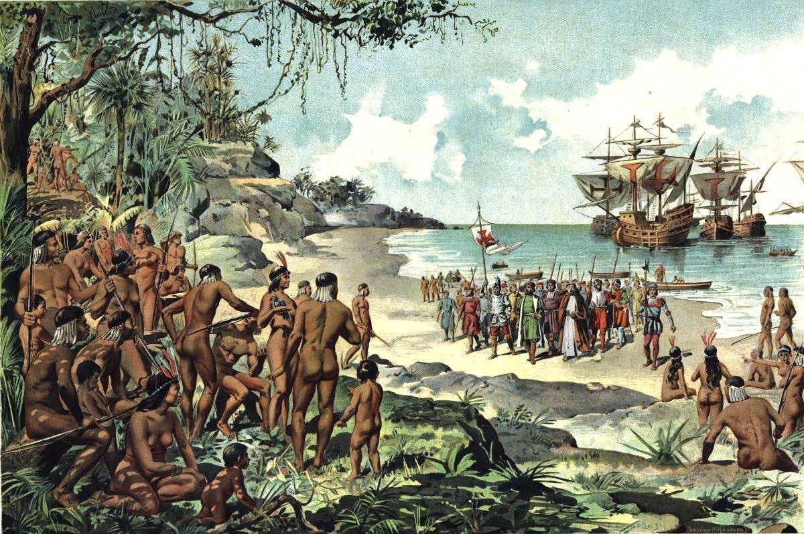
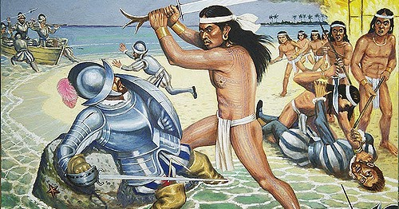
 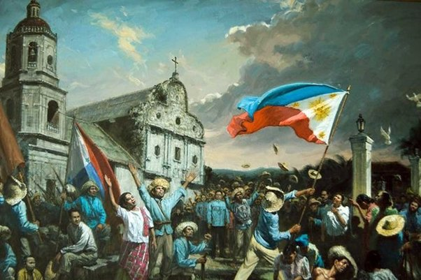
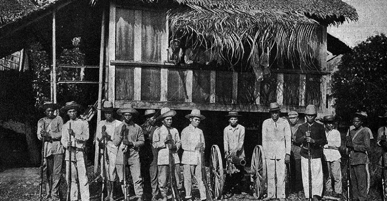
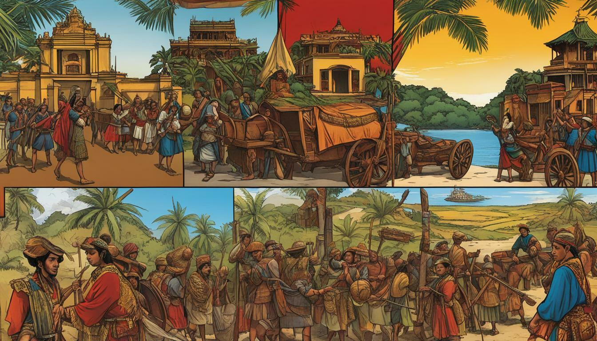
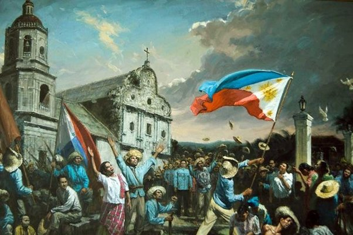
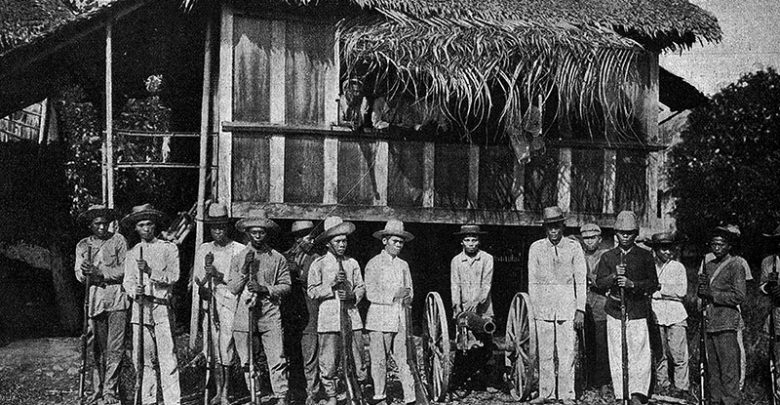
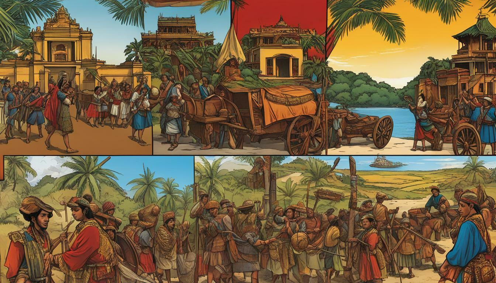
 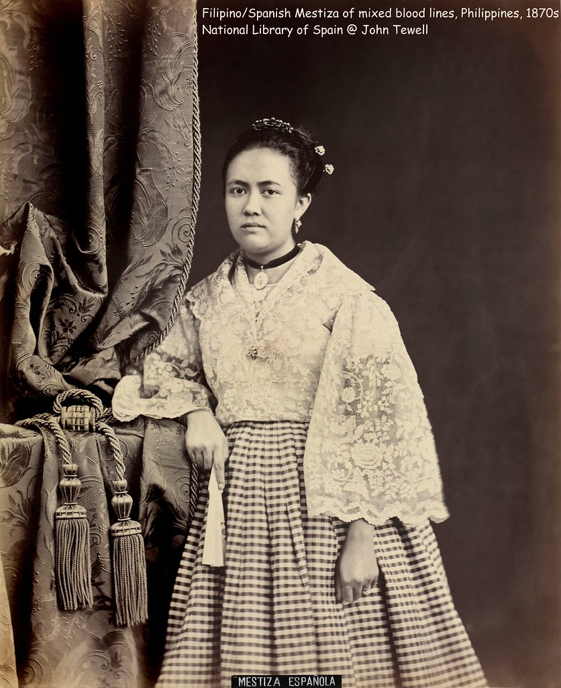
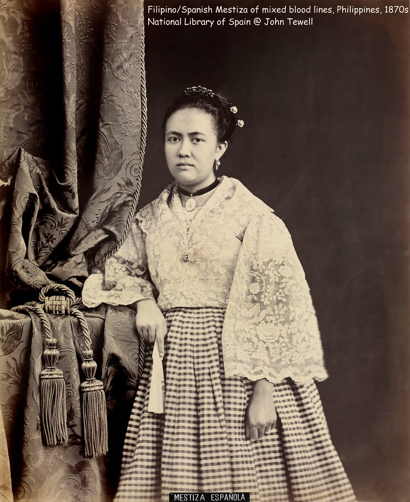